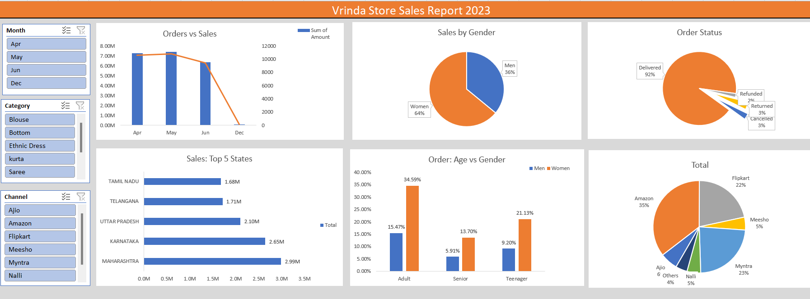
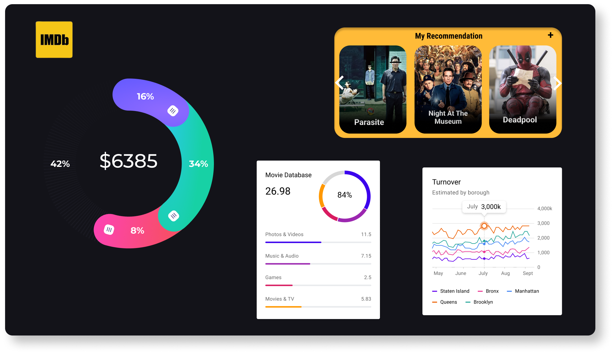
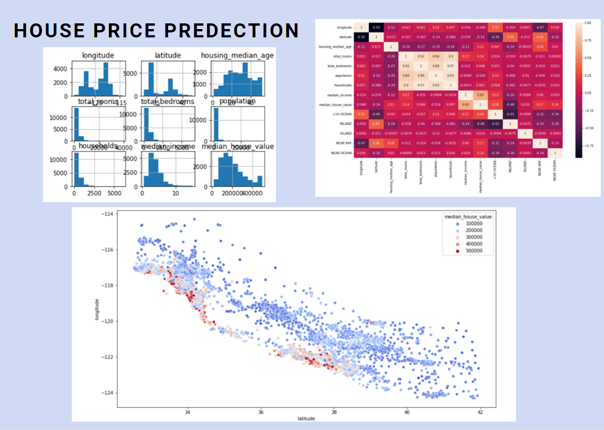

The project's objective is to analyze employee attrition within a company based on multiple factors. A comprehensive dataset is employed to derive meaningful insights. By utilizing various key performance indicators (KPIs) and visualizations, valuable insights are generated. Moreover, the project offers recommendations for retention strategies to address the issue of attrition effectively.

The Sales Analytics project for Vrinda Store aimed to analyze and gain insights from sales data using Excel and various visualization techniques. By leveraging the power of Excel and its features, the project aimed to provide valuable insights to the management team, enabling them to make informed business decisions and optimize sales strategies.
This project involved performing Exploratory Data Analysis (EDA) on festival sales data to extract valuable insights. Using Google Colab and Python, the data was cleaned and processed to generate various visualization charts. These visualizations provided key insights into shopping trends, allowing for a deeper understanding of the data.

The primary objective of this project is to acquire valuable insights and comprehensively understand the underlying trends and patterns prevalent within the film industry. By extensively analyzing a vast dataset, this project will explore various crucial aspects of movies, including ratings, genres, actors, directors, and more. Microsoft Excel was utilized for the data cleaning process, while Power BI was employed to generate insightful visualizations.

The objective of this project is to determine the anticipated prices of houses based on various factors. Advanced Python, along with NumPy and Pandas libraries, is employed to conduct exploratory analysis. The analysis aims to create a heat map illustrating the prices of houses per square foot.